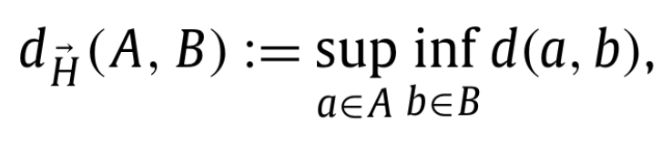
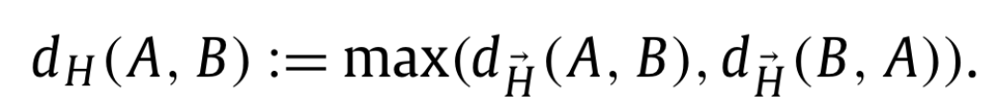

Hausdorff distance
Definition
Let's formally define the Hausdorff distance.
Here is the definition of the directed Hausdorff distance between two sets of points. It is defined as the maximum distance of a point in one set to the closest point in the other set. It makes more sense seeing it as math :

Where d(a,b) is the Euclidian distance between two points.
To make it more general, we can define the undirected Hausdorff distance, which is the maximum between the two directed Hausdorff distances.

Algorithms
Brute force
A simple brute force algorithm for that would look something like this :